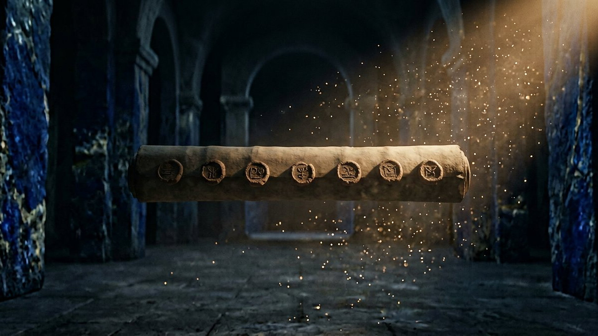

Découverte — 45 minutes
Les salles 01, 02, 03, 09 et 15 : l'essentiel, preuves à l'appui.

Le Musée des Prophéties de la Bible
« Je suis Dieu, et il n'y en a point de semblable à moi. J'annonce dès le commencement ce qui doit arriver, et longtemps d'avance ce qui n'est pas encore accompli. » — Isaïe 46:9, 10 (d'après Crampon 1904)
Reconstitution numérique — rouleau scellé dans la galerie du temps.
Les salles 01, 02, 03, 09 et 15 : l'essentiel, preuves à l'appui.
Toutes les salles, dans l'ordre du temps : de l'annonce à l'accomplissement.
D'abord la datation des manuscrits et les pièces à conviction (salle 01), puis les salles de votre choix.
Annoncer n'est pas contraindre. Ce musée montrera, salle après salle, des événements annoncés longtemps à l'avance et accomplis avec précision — tout en laissant chaque humain libre de ses choix : « J'ai mis devant toi la vie et la mort (…) Choisis la vie » (Deutéronome 30:19, d'après Crampon 1904). Celui qui prévoit choisit ce qu'il annonce ; il n'écrit pas le destin de chacun.
Trois niveaux, toujours distingués : FAIT ARCHÉOLOGIQUE un objet ou une fouille ; DONNÉE HISTORIQUE un auteur ou une chronique antique ; LECTURE PROPHÉTIQUE l'interprétation biblique du lien entre les deux. Quand les spécialistes débattent, un badge « DÉBATTU » le dit.
Salle 01
Salle 02
ACCOMPLIE
Salle 03
ACCOMPLIE
Salle 04
ACCOMPLIE
Salle 05
ACCOMPLIE
Salle 06
ACCOMPLIE
Salle 07
EN COURS
Salle 08
EN COURS
Salle 09
ACCOMPLIE
Salle 10
ACCOMPLIE
Salle 11
ACCOMPLIE
Salle 12
Salle 13
EN COURS
Salle 14
EN COURS
Salle 15
À VENIR
Salle 16
Salle 17
Salle 18
ACCOMPLIE
Salle 19
ACCOMPLIE
Salle 20
Salle 21
ACCOMPLIE
Salle 22
Salle 23
Salle 24
ACCOMPLIE
Salle 25
Salle 26
À VENIR
Salle 27
Salle 28
Salle 29
Salle 30
ACCOMPLIE
Salle 31
À VENIR
Salle 32
À VENIR
Salle 33
À VENIR
Salle 34
À VENIR
Salle 35
À VENIR
Salle 36
À VENIR
Salle 37
À VENIR
Salle 38
À VENIR
Salle 39
À VENIR
Salle 40
À VENIR
Salle 41
À VENIR
Salle 42
À VENIR
Salle 43
À VENIR
Salle 44
ACCOMPLIE
Salle 45
ACCOMPLIE
Salle 46
ACCOMPLIE
Salle 47
ACCOMPLIE
Salle 48
ACCOMPLIE
Salle 49
ACCOMPLIE
Salle 50
ACCOMPLIE
Salle 51
ACCOMPLIE
Salle 52
ACCOMPLIE
Salle 53
ACCOMPLIE
Salle 54
ACCOMPLIE
Salle 55
ACCOMPLIE
Salle 56
ACCOMPLIE
Salle 57
ACCOMPLIE
Salle 58
ACCOMPLIE
Salle 59
ACCOMPLIE
Salle 60
ACCOMPLIE
Salle 61
ACCOMPLIE
Salle 62
ACCOMPLIE
Salle 63
ACCOMPLIE
Salle 64
ACCOMPLIE
Salle 65
ACCOMPLIE